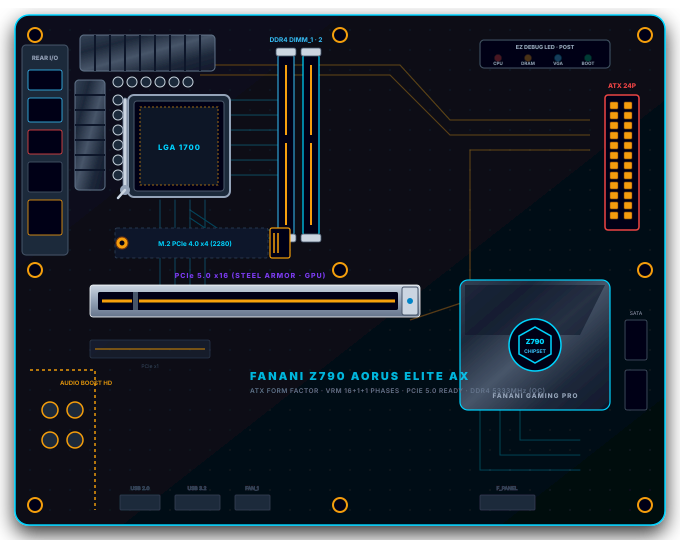

1 — 5
Perangkat Keras (Hardware)
A — E
Fungsi & Peran Sistem


Rakit komponen ke motherboard virtual, jelajahi sakelar biner, warna RGB, dan gerbang logika — semua dalam satu lab interaktif!

Bagaimana komputer yang hanya mengenal sinyal listrik mati (0) dan hidup (1) bisa menyimpan angka besar seperti 255?
Layar monitor komputermu menampilkan jutaan warna. Bagaimana komputer memadukannya hanya dari 3 warna cahaya dasar (Red, Green, Blue)?
Semua perhitungan di CPU komputer berasal dari kombinasi gerbang logika dasar: AND, OR, dan NOT. Bagaimana ketiga gerbang sederhana ini bisa menghasilkan operasi yang sangat kompleks?
Ikuti langkah-langkah di bawah ini untuk memulai perakitan komputer secara mandiri:

Media Lab Maya Perakitan Komputer hadir untuk menghadirkan pengalaman praktikum perakitan perangkat keras (hardware) dan pengujian sistem komputer (POST diagnostic) tanpa keterbatasan fasilitas fisik laboratorium sekolah. Melalui pengalaman hands-on merakit komponen motherboard, bereksperimen dengan bilangan biner, gerbang logika, serta pencampur warna RGB, peserta didik SMP Fase D dapat bereksplorasi secara mandiri, berani mencoba (trial and error), dan membangun pemahaman konkret tentang cara kerja sistem komputer yang berorientasi pada penguatan nalar kritis.
Media pembelajaran “Lab Perakitan Komputer” ini dikembangkan dengan memanfaatkan bantuan Artificial Intelligence (AI) sebagai mitra kolaborasi dalam penataan struktur kode HTML, CSS, JavaScript, optimasi grafis vektor SVG, dan penyempurnaan pengalaman interaksi pengguna agar ramah bagi peserta didik SMP.